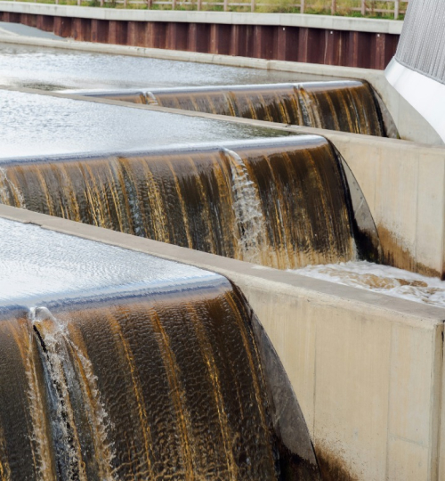
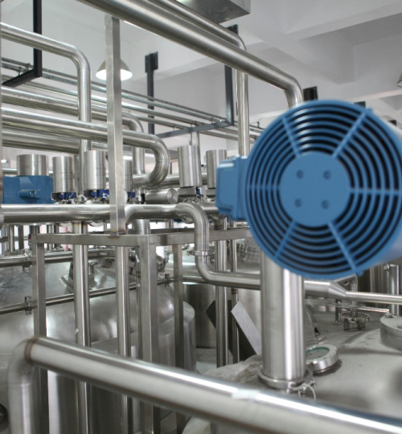
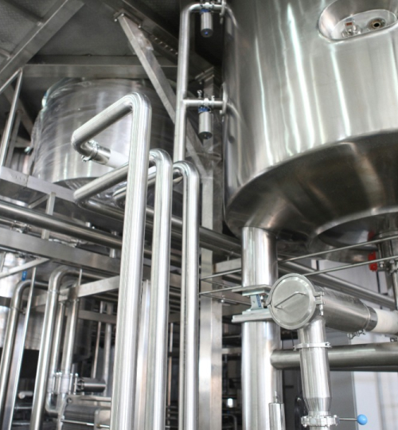
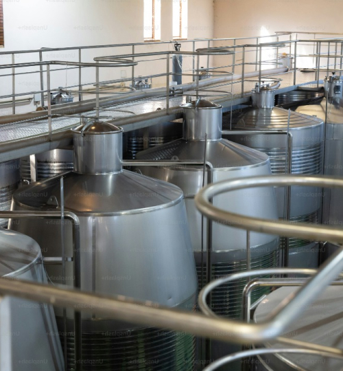
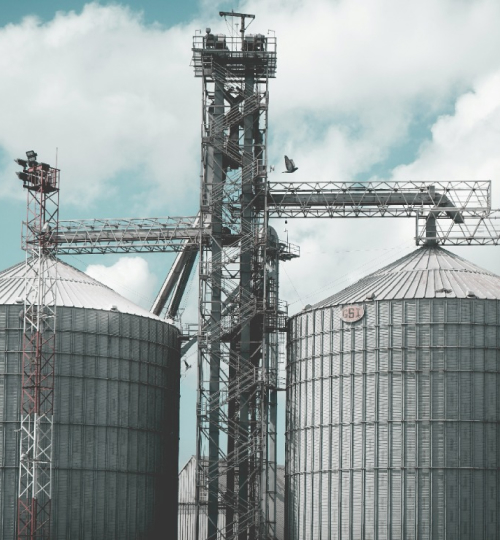

Home > 기술혁신 > 환경연구소
환경연구소
Think of the people and nature
Environment R&D
사람과 자연이
건강하고 쾌적할 수 있도록
금호건설의 환경연구소는 건전하고 지속가능한 환경 개발을 위해 환경 복원 및 오염 방지를 위한 기술 개발에 주력하고 있습니다.
이를 위하여 고도정수처리, 하수고도처리, 하상퇴적물처리, 오염토양 복원, 축산분뇨 및 음식물 쓰레기 등의 유기성 폐기물을 이용한 바이오가스 생산 및 에너지화 등에 주력하고 있습니다.
History
-
- 2017
- 11환경신기술 인증 제535호 및 검증 제215호 취득
-
- 2010
- 10환경신기술 인증 제320호 및 검증 제138호 취득
-
- 2009
- 11환경신기술 인증 제293호 및 검증 제125호 취득
-
- 2005
- 01환경신기술 인증 제110호 취득
-
- 2001
- 02환경신기술 인증 제7호 및 검증 제8호 취득
연구분야
-
research field
- 고효율 역삼투법 해수담수화 / 하수 재이용 공법
- 전처리 공정에 막여과(MF) 공법을 적용하여 역삼투막의 오염저감을 통해 역삼투막의 성능을 향상시키고, 고내압성 역삼투막과 에너지 회수장치를 적용하여 기존의 역삼투 시스템의 회수율을 대폭 향상시킨 고효율 저에너지 수처리 기술입니다.
 -
research field
- 막여과 정수 처리 공법
- 원수의 수질 특성에 따라 전처리 및 막여과 공정을 최적화하여 높은 여과 유속에서도 안정적인 운영이 가능하여 중·대규모 정수장에 적합한 기술입니다.
 -
research field
- KIDEA 공법
- 연속 또는 간헐 유입되는 회분식 활성슬러지(SBR) 공정으로, 혼합-포기-침전-방류의 연속적인 Cycle로 운영되며, 스컴 월류 방지 및 배출비 조절이 가능한 디켄터(Decanter) 적용을 통해 안정적 처리수질 유지가 가능한 하·폐수 고도처리기술입니다.
 -
research field
- KUMHO-MBR 공법
- 분리막(평막)을 이용한 하·폐수 고도처리 기술로, 하수의 유입부하 변동에 따라 반응조 내 유입 및 반송 모드 변화를 가능하게 하여 질소 및 인의 제거효율을 향상시킨 MBR(MembraneBio-Reactor) 공법입니다.
 -
research field
- KH-ABC 공법
- 음식 물류 폐기물, 가축 분뇨 및 하수슬러지 등의 고농도 유기성 페기물을 수평형 형태의 혐기소화조를 이용해 바이오가스를 생산하는 기술로, 상하교반장치를 이용해 고형물 침적을 저감시키고 소화조 일체형 생물탈황 장치를 이용하여 탈황설비 용량을 감소시킨 기술입니다.

금호건설이 기술을 사랑하는 방식,
건설 문화 창조 솔루션
금호건설은 건설 문화 창조를 위해 건설기술에 대한 기초연구, 국토의 확장과 효율적 이용,
사회기반시설의 계획과 시공 및 추진관리, 생산성 향상을 기본으로 기술 선진국의 꿈을 펼쳐가겠습니다.
-
- 기술개발전략
특성화, 차별화 - 특화 연구 분야 요소 기술 및
시스템화 기술 개발
- 기술개발전략
-
- 선진 기술 도입
- 선진 기술 제휴 및 개량
-
- 개발 기술 실용화
- 환경 친화적, 고객 창출형 기술 개발